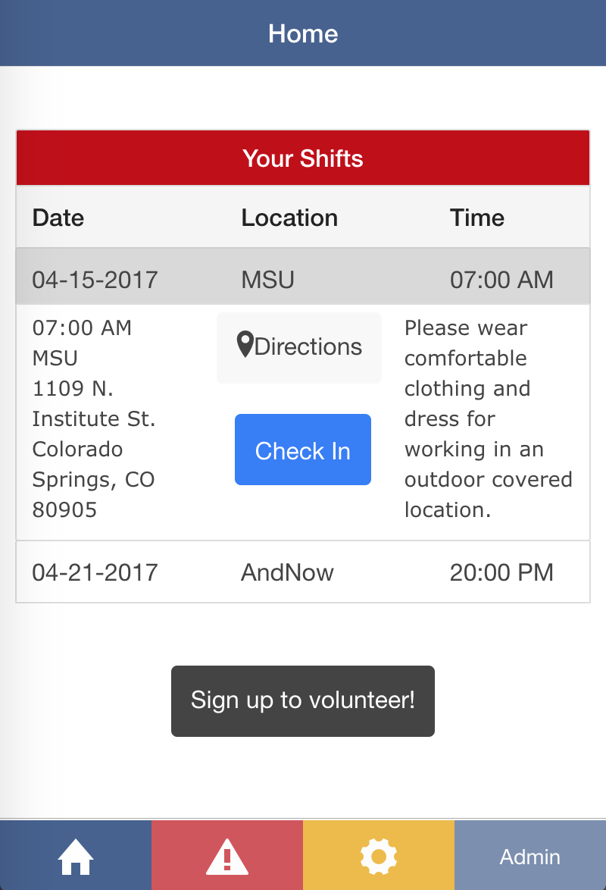
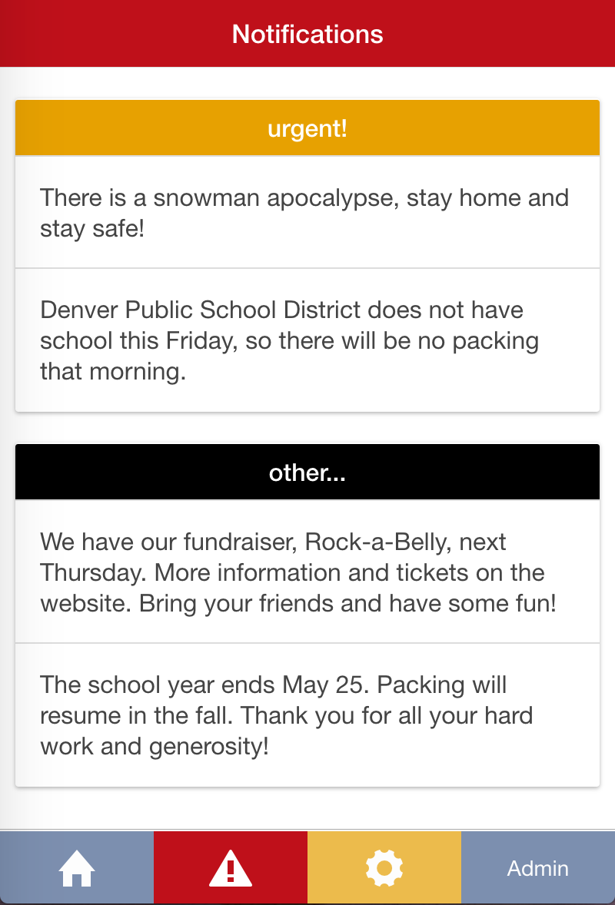
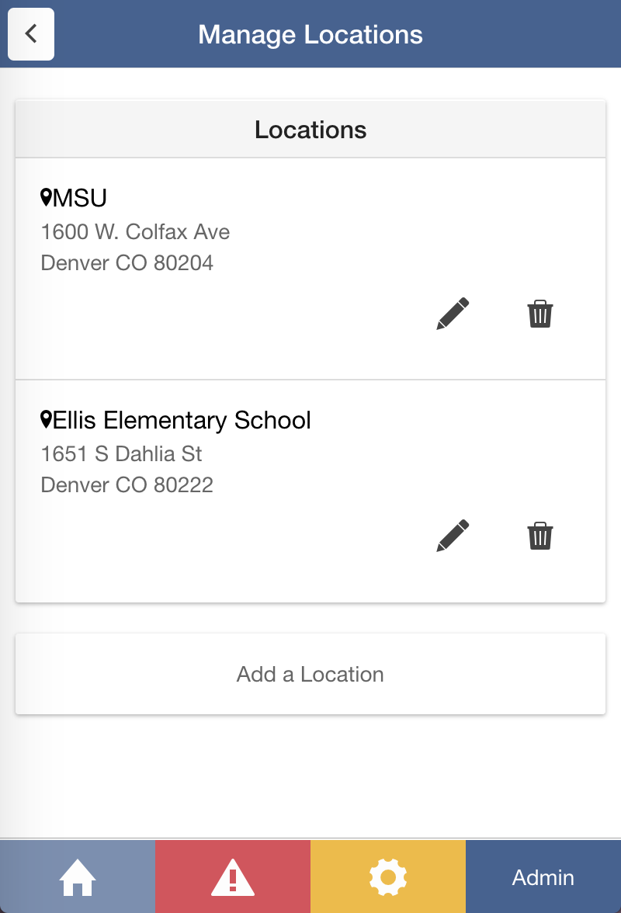

The Food For Thought web/mobile application was my senior project at CU.
During the school week, children from low-income families in Denver Public Schools receive free and reduced lunches at school.
Often the lunch they receive at school on Friday is the last meal they eat until they arrive back at school on Monday.
Food For Thought strives to eliminate this problem by providing a PowerSack to each student to take home for the weekend.
The application produced helps manage volunteers that help pack and deliver these PowerSacks.
The administrators can make new volunteer shifts, add different packing locations, control notifications the volunteers will see, and check in volunteers at the packing sites.
I worked on the front end aspect of this project. We used Ionic Framework to construct the application, which includes using HTML5, CSS, and AngularJS.

Home Screen:
Volunteers can view the shifts they have signed up for and all of the details they need to know.
They can pull up directions to the location and check in when they get there.

Notifications:
Volunteers can see notifications that the coordinators want them to know about.
These include urgent notifications, such as cancelling for weather, and informational notifications, such as information about their fundraisers.

Admin Locations:
Administrators can add, edit, and delete the packing locations that will be attached to the volunteer shifts.
This functionality is also available for notifications and volunteer shifts.